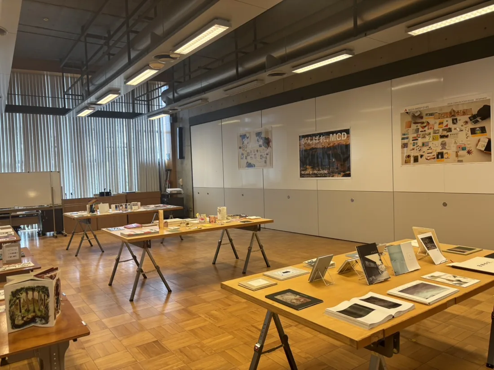

自主制作本の
アートブックイベント
本イベントは個人、グループで制作した本を、机ブースで来場者と交流しながら販売するイベントです。
コンテンツは、アーティストブック、ZINE、写真集、絵本、漫画、文芸誌など多様なジャンルの自主制作本が対象です。
（フリーペーパーや二次創作は対象外となります）
出品予定の本や本制作アーティストに関連するグッズの販売も可能です。
ただし、危険物、生もの、著作権、肖像権、公序良俗に反するものは出品できません。
出品をご希望のかたは以下の申込フォームにご記入し、作品写真を添付してください。
過去のイベント参加実績なども記載してください。（※去年のものをそのまま掲載。お客様も読むので、要調整）
対象のコンテンツ
出展対象
- アーティストブック
- ZINE
- 写真集
- 絵本
- 漫画
- 文芸誌
- その他、自主制作の書籍
- 出展予定の本や本制作アーティストに
関連するグッズの販売も可能
出展対象外
- フリーペーパー
- 二次創作
出展ご希望の方
- 出展料：1,000円
- 申込方法：申込フォーム または Instagram の DM
- 申込期限：9月6日（日）※仮
- 出展条件
- 出展可能な本のサイズ：[ 要確認 ]
- ブースのサイズ：[ 要確認 ]
- 搬入・搬出時間：[ 要確認 ]
- その他：[ 要確認 ]

2025年開催の様子
日程・会場
| 日程 | 2026年10月2日（土）・3日（日） |
|---|---|
| 開催時間 | 10:30 〜 16:30 |
| 会場 | 愛・地球博記念公園 モリコロパーク 地域交流センター 体験学習室3 愛知県長久手市茨ケ廻間乙 1533-1 |
| アクセス | 公共交通機関：リニモ「愛・地球記念公園」駅 車：詳細を書きます |